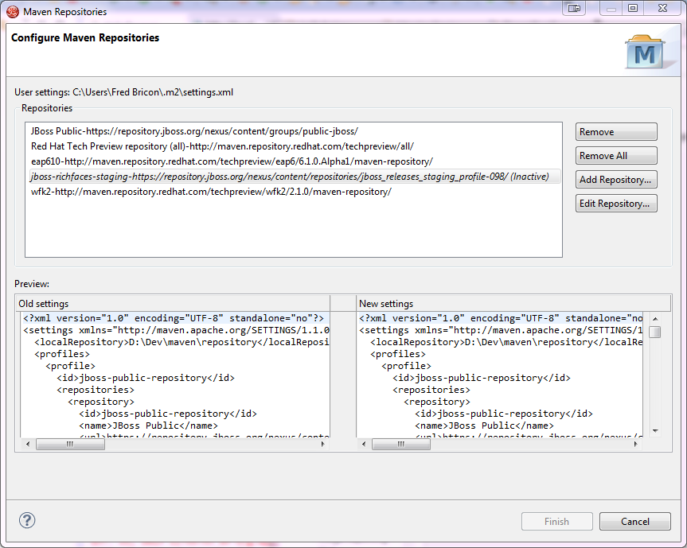

< Project Examples Forge Tools >
JBoss Maven Integration |
|
| Edit Maven Repositories |
Maven Repositories defined in profiles in your settings.xml (Window > Preferences > JBoss Tools > Maven Integration > Configure Maven Repositories...) can now be edited with the "Edit Repository..." button : Inactive repositories now stand out with an (Inactive) suffix. Click on the "Edit Repository..." button to (re)activate them. See JBIDE-13831 for more details. |
|
|
|